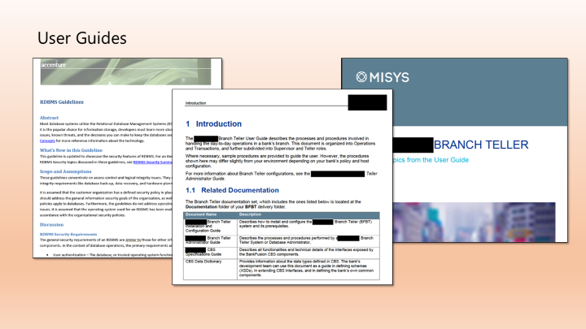
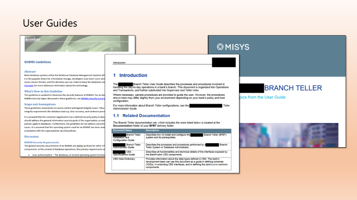

Professional Summary
Roles and work experience
Nobia Denmark A/S
IT Consultant
February 2020 – Present
Responsibilities:
- Analysis and estimation of change requests
- Quality assurance scoping and preparation of test environments
- Process mapping and monitoring
- Online reports generation
- 2nd level support for incidents and problems
Global Process Managers, Inc.
Business Process Architect
February 2015 – January 2020
Responsibilities:
- Explored, Documented, and Clarified change requests received from Nobia Denmark’s IT and Business Departments.
- Created, updated, and maintained the Sprint and Development documentation including man-hour estimates, sprint items, daily meeting action items and so on.
- Served as first level go-to person for application functionality inquiries in Manila.
- Handled application language translation processing.
- Performed User Acceptance Testing of candidate application builds.
- Participated in daily meetings for release concerns and updates.
- Participated in semi-regular meetings about the release of new products from the pipeline.
Accenture Manila Delivery Center
Consultant Technical Writer
September 2012 – February 2015
Responsibilities:
- Created high-level to detailed sprint items that serve as work items for the GDM Methods Team in Accenture. Sprint items include time estimates, degree of automation, level of review, and delivery schedule.
- Produced sprint-related reports such as the sprint plan, schedule, capacity, DoD, and retrospectives, and serves as a liaison between Manila and US teams.
- Created, updated, and reviewed development methodology and development process documents.
- Developed video and deck training modules in collaboration with US product owners.
- Developed and designed Microsoft SharePoint sites.
- Developed VBA macros for automation of tasks.
- Functioned as a business analyst for tools development.
Misys Philippines
Senior Technical Writer
July 2011 – September 2012
Responsibilities:
- Created documentation plans around the requirements of Misys banking products, this responsibility included recommending the type of documents to be delivered, expected person-hours, documentation tools to be utilized, and the delivery schedule itself.
- Coordinated with the development team for technical accuracy and review responsibilities of each document.
- Created, updated, and reviewed Misys banking documentation.
- Was part of a team of global technical editors that regularly met for documentation quality assurance.
ESS Manufacturing Company Incorporated (EMCI)
Senior Technical Writer for Electronic Arts Project
July 2009 – July 2011
Responsibilities:
- Gathered, interpreted, and organized network information to support the online and multiplayer functionalities of games produced by various Electronic Arts (EA) studios.
- Initiated periodic document reviews to keep the support documents up to date and at par with current standards.
- Conducted training and knowledge transfer sessions with other writers on technical and non-technical topics.
- Attended EA regional IT change management meetings to represent the interests and needs of the documentation team.
Lawson Philippines Solutions and Services Center (PSSC)
Technical Writer
August 2007 – July 2009
Responsibilities:
- Provided analysis, generalization, and documentation of customer cases for publication in the Lawson Knowledge Base system.
- Specialized on Supply Chain Management and Procurement cases.
- Conducted peer-review of technical articles for quality control.
- Implemented revisions to the Lawson Knowledge Base language standards.
- Held weekly Post-mortem meetings for quality assurance and group discussions.
- Served as officer in charge when manager was on-leave.
- Accomplished administrative tasks such as quality control monitoring and statistical reporting.
- Achieved the highest performance evaluation rating among Knowledge Base peers in TalentView (Lawson’s internal 360-degree rating system).
- Received the Lawson Outstanding Contribution award and the Eureka award related to documentation productivity and innovation.
Professional trainings
- ITIL V3 Foundation Certification
Pasig, Manila - Technical Writing and Game Technology Training
Electronic Arts headquarters, California - Dale Carnegie Personality Development Training
Lawson Philippines - Nortel Networks Cellular Technology Training
ESS Manufacturing Company Inc, Philippines - Process Engineering Training
Photocircuits Philippines - Front-End Engineering Training
Photocircuits Philippines - Six-Sigma White Belt Training
Samsung Electronics Philippines - Optical Pick-up Handling and ESD Prevention
Samsung Electronics Philippines
Education and professional examinations
- Mapua Institute of Technology
Bachelor of Science in Electronics and Communications Engineering
Graduated January 2004 - Professional Regulatory Commission
Electronics and Communications Engineering Licensure Examination
Passed April 2004 - Basic Spoken Chinese Level 1
Ateneo de Manila Confucius Institute
Completed September 2010
Professional and academic awards
- Finalist, National Institute of Singapore's Quantum Shorts Short Story Writing Contest
2015 - Lawson Outstanding Contribution Award
2008 - Lawson Eureka Award
Joint winner, 2008 - Highest Lawson TalentView performance evaluation rating
2008 - 1st place, short story writing contest sponsored by The New Builder
2002 and 2003
Software and Concepts Skill Set
Publishing
- MadCap Flare
- Adobe Robohelp
- AuthorIT
- Arbortext Epic Editor
- Microsoft Visio
- Microsoft SharePoint
- Adobe Photoshop
- Microsoft Infopath
- DITA
Programming
- Delphi/Pascal
- SQL Server Management Studio
- Multilizer Translation tool
- Python
- Agile Development
- HTML
- VBA
- Visual Studio
- Team Foundation Server
- JavaScript
In presenting these samples, I also provide information about the tools, environment, and the general context surrounding their creation. Where necessary, I redact copyrighted terms and other sensitive intellectual property.
The Data Migration and VBA Projects sections are in progress. I will be updating the available files in due time, but if you require samples from this type of work immediately, please inform me. See the Contact Details tab.
Requirements Gathering
Simple UI Change - Company B Data Migration Project
This change request represents a typical scenario in any organization. There is a principal project to standardize and merge the intellectual properties and databases of two companies.
As a business process architect, I help divide the principal change into into smaller, focused, and SMART change requests. Notice that all requirements are subdivided into specific categories like UI requirements, Functional requirements, Performance requirements and so on. Notice also that while this specific change request is small in scope, the overview section ties it up with the larger organization-wide change.
Click the image to view the change request document.
User guides
|
The Misys Branch Teller User Guide Software user guides describe the relevant processes that End-users perform. In this example, the End-users are bank tellers, and the processes are bank transactions that range from trivial to complex. Click the thumbnail to open the document. If you encounter issues opening documents from within the browser, right-click and select "Save target as..." Level of involvement This project required me to be embedded within the development team. I often met and consulted with the following experts:
Tools I used the following applications and environments:
|

|
Guidelines
|
The Accenture RDBMS Guideline Consulting firms like Accenture and its subsidiaries employ guideline documentation to help keep their development teams informed on regulatory and company policies. One drawback of guidelines documentation is that developers find it hard to read or re-read lengthy expositions on topics they are already familiar with. I performed the guideline update by dividing previously disorganized content into smaller sections, offering links to recently updated topics upfront, removing (with consultation) obsolete or redundant sections, and connecting related topics through hyperlinks. This is a small representative sample of the information security updates applied on existing guidelines. Furthermore, the presentation is not true to form because the content is intended to be consumed through the custom web application that our team maintains. I chose not to re-produce the web application in this demo, focusing instead on the content. Level of involvement This project required light to medium involvement. Often involving just me and two experts discussing the changes over email. |

|
VBA Projects
Small Projects for Automating Repetetive Documentation Tasks
I create VBA macros that range from simple to medium-complexity:
- Universal Search and Replace
- Data Input, Summarization, and Graph Visualization
- Microsoft Word Rebranding (applying new styles and template settings to legacy Word documents)
Let me know if you need samples of my work in this area.
About this website
This website features jQuery accordions nested inside tabs. jQuery UI animations are light-weight, efficient, and relatively easy to implement. It enables the extension of screen real estate while maintaining visual simplicity and order.
Tools
I used the following applications and environments:
- Microsoft Office Suite to create presentations and analyze data.
- Notepad++ to write HTML code.
- Github to publish the website.
- Adobe Acrobat Professional to redact sample PDFs.
Minimal HTML and Javascript
Fluid dynamics simulation with minimal layers of abstraction
The demo achieves a great level of realism with only HTML5, JavaScript, and a few layers of abstraction:
- Blobs
- Meta-balls
- Coloring gradient
Color Wise
The demo is a way to test the player's color distinction skills. It uses the named HTML colors as a reference.
It is a simple game that uses HTML, CSS, and JavaScript. The game is designed to be played in a web browser.
https://jesuschua.github.io/htmll_colors/app/index.htmlSimple parallax effect using only HTML and CSS
Parallax in common terms is the apparent faster movement of objects that are nearer the observer. This demo website explains how this phenomenon is used.
https://jesuschua.github.io/parallax/parallax_demo.htmlData Gathering and Analysis
Forbes List vs Wikipedia Pageviews
Archery simulation - 2D
Golf Screen Saver
A relaxing golf screen saver simulation with simple physics.
https://jesuschua.github.io/golfer/app/index.html